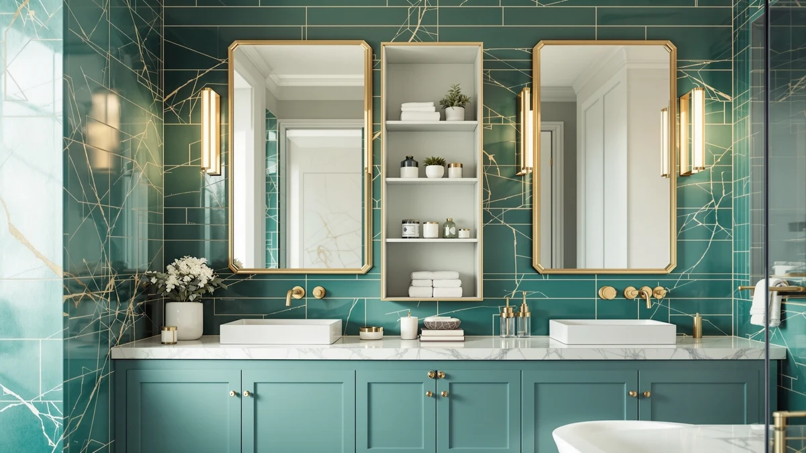

Best Bathroom Mirrors with Storage (2026)
Prices and picks verified as of September 2026. Independent, reader-supported reviews.


Quick Answer
If your mirror and sink area is short on space, an over-toilet storage rack or cabinet is the easiest way to add shelving without touching the floor plan. The Kitsure Over Toilet Storage Rack gives you three tiers of open shelving at the lowest price in this lineup, and it's freestanding, so there's no drilling into the wall.
Our pick: Kitsure Over Toilet Storage Rack — $35.99 Check Price on Amazon
Bottom line: our top pick is the Kitsure Over Toilet Storage Rack - Metal Over Toilet Bathroom at $35.99. The best budget option is the Simple Trending Over The Toilet Storage Cabinet at $29.99.
Things to Know Before You Buy
- Measure before you buy: check the height from floor to toilet tank and the wall clearance around it, since some cabinets need several extra inches of depth.
- Metal vs. wood: metal frames tend to hold more weight per shelf and cost less; wood and wood-composite cabinets look more finished but are usually pricier and lighter-duty.
- Open shelving vs. enclosed cabinets: open shelves are easier to access but show clutter; a cabinet with a door hides toiletries at the cost of a bit more bulk.
- Assembly is required: nearly every unit in this category ships flat-packed, so budget 30-60 minutes and a screwdriver.
- Anchor tall units: anything over 60 inches tall should be secured to the wall or toilet tank per the included hardware to prevent tipping.
A small bathroom mirror and vanity area rarely comes with enough storage for towels, toilet paper, and toiletries. Rather than fighting for counter space, most buyers solve this by adding a dedicated storage unit elsewhere in the room, and the wall above the toilet is usually the largest patch of unused space available.
Over-toilet storage racks and cabinets range from simple open-shelf frames under $40 to taller enclosed cabinets that top $100. The right pick depends on how much you need to store, whether you want items on display or hidden behind a door, and how much clearance your bathroom actually has.
Below we compare seven of the top-selling over-toilet storage options, matched on material, size, price, and what past buyers say about assembly and stability.
Why You Should Trust Us
This guide is written and maintained by Ilane Tall for Best Bathroom Storage. We research bathroom storage products by comparing manufacturer specs, pricing, and verified buyer reviews rather than running a physical testing lab. We do not own or personally test every product we cover, and we say so plainly.
How We Picked
We started from the current lineup of over-toilet storage products available through Amazon, then filtered for units with consistent buyer ratings, clear dimensions, and a mix of price points and materials so this list works for different budgets and bathroom layouts. We excluded products with a pattern of stability or missing-parts complaints in verified reviews.
How We Compared
We compared each pick on published dimensions, weight capacity where available, material (metal vs. wood), price per shelf, and what verified reviewers consistently report about ease of assembly and long-term sturdiness. We did not physically assemble or test these units ourselves.
Our Picks

Kitsure Over Toilet Storage Rack
What we like
- Lowest price in this lineup
- Freestanding, no wall mounting required
- Three open tiers hold baskets, towels, or bottles
Flaws but not dealbreakers
- Metal frame feels less substantial than pricier cabinets
- Open shelves mean stored items stay visible
| Material | Metal / wood |
| Size | 3 Tiers (63.2"H) |
The Kitsure rack straddles the toilet tank and rises 63.2 inches, giving you three open shelves for towels, tissue, and toiletries without touching your existing wall or vanity storage.
At under $40 it's the least expensive option here, making it a low-risk starting point if you're not sure how much over-toilet storage you actually need.

Spirich Over The Toilet Storage
What we like
- Enclosed cabinet keeps clutter out of view
- Open shelves above for everyday items
- Slim 9-inch depth fits tight bathrooms
Flaws but not dealbreakers
- Costs more than twice as much as the Kitsure rack
- Cabinet interior is narrower than the overall footprint suggests
| Material | Metal / wood |
| Size | 24.8" (W) x 9" (D) x 66" (H) |
The Spirich tower pairs a closed lower cabinet with two open shelves up top, so you can stash extra toilet paper and cleaning supplies out of sight while keeping daily essentials accessible.
At 66 inches tall and just 9 inches deep, it fits narrow bathrooms without crowding the space around a mirror or vanity.

Homhedy Over The Toilet Storage
What we like
- 30.7-inch width gives the most storage volume here
- Combination of open and enclosed compartments
- Sturdy build reported by verified buyers
Flaws but not dealbreakers
- The most expensive pick on this list
- Extra width means it needs more wall clearance
| Material | Metal / wood |
| Size | 7.8"D x 30.7"W x 65.4"H |
At 30.7 inches wide, the Homhedy cabinet holds noticeably more than the narrower units in this roundup, with a mix of open shelving and an enclosed lower section.
It's the priciest pick here, but for households sharing one bathroom, the extra width can mean the difference between clutter on the counter and everything having a home.

Meilocar Over the Toilet Storage
What we like
- Five separate shelves for easy sorting
- Fully open design makes everything reachable
- Mid-range price for the shelf count
Flaws but not dealbreakers
- No enclosed storage for hiding clutter
- More shelves means more dusting
| Material | Metal / wood |
| Size | 5 Open Shelves |
With five distinct shelves, the Meilocar rack is built for buyers who want to sort items into separate baskets or bins rather than stacking everything on two or three levels.
The fully open design trades hidden storage for maximum visibility and easy access, which works well for households that grab towels and toiletries frequently.

VASAGLE Over the Toilet Storage
What we like
- 70-inch height makes use of vertical wall space
- Reinforced metal frame reported as stable
- Mid-range price from an established brand
Flaws but not dealbreakers
- Height may feel tall for low-ceiling bathrooms
- Open shelving only, no enclosed storage
| Material | Metal / wood |
| Size | 7.9"D x 24.6"W x 70"H |
VASAGLE is a familiar name in home storage, and this 70-inch rack uses a reinforced metal frame to hold multiple shelves of towels and toiletries above the toilet.
It sits in the middle of this lineup on price, offering more height than the budget racks without moving up to full-cabinet pricing.

Yaheetech Over The Toilet Cabinet
What we like
- Enclosed cabinet hides clutter behind a solid door
- Adjustable interior shelving
- Mid-range price for a fully enclosed unit
Flaws but not dealbreakers
- Less visible storage for frequently used items
- Cabinet door adds another moving part to install
| Material | Metal / wood |
| Size | 9″D × 25″W × 66″H |
Unlike the open racks in this lineup, the Yaheetech cabinet closes behind a solid door, keeping toiletries and extra tissue completely out of view.
Interior shelves are adjustable, so you can reconfigure the space for taller bottles or stacked towels as your storage needs change.

Simple Trending Over The Toilet
What we like
- Lowest overall price in this roundup
- Compact 13-inch depth suits small bathrooms
- Simple assembly reported by buyers
Flaws but not dealbreakers
- Fewer shelves than the taller units here
- Lighter-duty frame than the metal-heavy options
| Material | Metal / wood |
| Size | 24.25"W x 13"D x 64"H |
The Simple Trending rack keeps things basic: a compact frame with open shelving at the lowest price point in this comparison.
Its smaller 13-inch depth makes it one of the easier picks to fit into a tight bathroom without crowding the toilet or nearby fixtures.
Quick Comparison
| Product | Material | Price | Rating | Best for | Get it |
|---|---|---|---|---|---|
| Kitsure Over Toilet Storage Rack | Metal / wood | $35.99 | 4 | Lowest price, freestanding | View on Amazon → |
| Spirich Over The Toilet Storage | Metal / wood | $89.99 | 4 | Hidden + open storage mix | View on Amazon → |
| Homhedy Over The Toilet Storage | Metal / wood | $119.99 | 4 | Maximum storage capacity | View on Amazon → |
| Meilocar Over the Toilet Storage | Metal / wood | $79.99 | 4 | Most individual shelves | View on Amazon → |
| VASAGLE Over the Toilet Storage | Metal / wood | $59.49 | 4 | Brand-name build quality | View on Amazon → |
| Yaheetech Over The Toilet Cabinet | Metal / wood | $69.99 | 4 | Fully enclosed cabinet | View on Amazon → |
| Simple Trending Over The Toilet | Metal / wood | $29.99 | 4 | Compact fit for small bathrooms | View on Amazon → |
What's the best storage option to pair with a bathroom mirror?
An over-toilet storage rack or cabinet is one of the most space-efficient options, since it uses the wall above the toilet instead of eating into counter or floor space near your mirror and sink.
How much weight can an over-toilet storage rack hold?
Capacity varies by material and design.
The Competition
We passed on several other over-toilet storage listings with a pattern of complaints about missing hardware or wobbly top shelves in verified reviews. We also skipped units with vague or missing dimensions, since fit is the most common source of buyer regret in this category. We left out a handful of near-identical rebrands of the models above to avoid listing the same design twice.